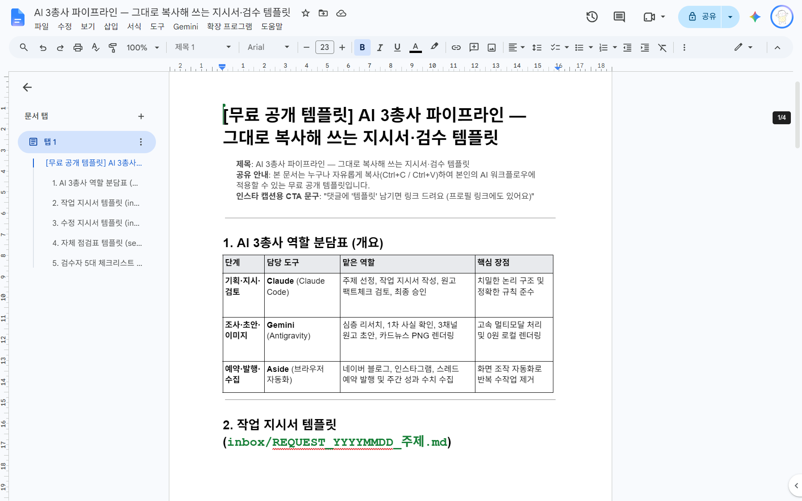

육퇴 후 밤 10시, 초보 아빠가 퇴근 후 실제로 굴려본 AI 협업 파이프라인과 실전 활용법을 솔직하게 기록합니다.
클로드 프롬프트 지시서 양식부터 안티그래비티 검수 체크리스트까지, 제가 매일 밤 실제 사용하는 서식을 구글 문서로 열어서 바로 사본 복사해 가세요.

최근 글 목록을 불러오는 중...
새로운 AI 파이프라인 실험 결과와 유용한 템플릿이 업데이트되면 이메일로 가장 먼저 소식을 보내드립니다.
* 현재 로컬 검토 단계입니다. 입력하신 정보는 외부로 전송되지 않으며, 정식 오픈 시 안전하게 암호화 관리됩니다.